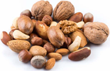
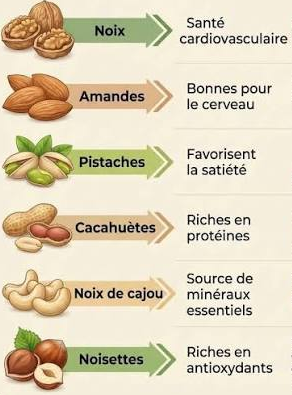

Les

fruits à coque
le terme "fruits a coque" désigne les amandes,noisettes,noix,noix de cajou,noix de macadamia,noix de pecan,noix de Bresil et pistaches !
De véritables trésors nutritionnels
- Riches en protéines
- Riches en bons acides gras
- Apportent des vitamines et des minereaux
- Riches en fibres et fortes denisté énergétique
- IG faibles
De multiplres vertus pour la senté
les principales recommandations
- Privilégier les fruits a coque naturels
- eviter les produits trop salés
- varier les types de fruits a coups
- Les intégrer réguiliéres dans l'alimentation
Quelques definitions
- Fruits a coque
- Fruits dont le graine est protégée par une coque dure,comme les noixs,les noisettes ou les amandes
- Omega-3
- Acide gras essentiels participants notamments au bon fonctionnement de l'organisme.
- Indice glycémique (IG)
- Indicateur permettant de mesurer l'effet d'un aliment sur l'augmentation de la glycémie.
Quelque fruits a coque
Compositions
| Fruits a coque |
Protéines |
Fibres |
| Amonde |
Elevées |
Elevées |
| Noix |
Elevées |
Elevées |
| Pistache |
Elevées |
Elevées |
| Noix de cajou |
Elevées |
Moyennes |
Conseils pour profiter au mieux de leurs bienfaits
voici Quelques Conseils pour intégrerles fruitsà coque dans une alimentation équilibrée
Nos Conseils pour profiter au mieux des bienfaits des fruits à coque
| Moment |
Conseil |
Illustration |
| Au quotidien |
Évitez les fruits à coque grillés ou salés
|
|
| Préférez-les naturels |
| Pour varier |
Variez les fruits à coque, car leur profil lipidique est différent. |
|
|
Les amandes, noisettes, noix, noix de cajou et pistaches sont riches en nutriments.
|
| Au petit-déjeuner |
Incorporez-en dans votre muesli ou porridge d'avoine au petit-déjeuner. |
|
| Ils peuvent également être ajoutés à un yaourtou à une salade de fruits. |
| Après l'effort |
Emportez-en avec vous pour le goûter ou après l'effort |

les bienfaits